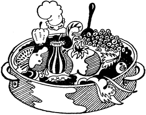

Reţete de Didi Balmez:
Mîncăruri de legume fără carne


Legumele sînt plante deosebit de importante în
alimentaţie, fiind bogate în vitamine şi
săruri minerale cu efecte alcaline, bogate în
celuloză care ajută la tranzitul intestinal, deci
combate constipaţia.
Legumele sub formă de frunze sau rădăcini se
consumă în stare proaspătă sau preparate,
combinate cu verdeţuri-pătrunjel verde, tarhon verde,
ceapă verde etc. Legumele, conservate sub orice
formă-uscate, congelate, fierte, murate-înlocuiesc
cu succes legumele verzi în timp de iarnă.
Legumele pot înlocui carnea, căci sînt bogate
în substanţe proteice, albumine şi glucide.
Consumul legumelor proaspete, nefierte este cel mai indicat
în alimentaţie, căci nu-şi pierd
calităţile nutritive aşa cum se
întîmplă cînd se prepară la foc. Pentru
a fi consumate în stare proaspătă trebuie să
fie foarte bine spălate sub jet de apă rece la robinet
şi cu puţin timp înainte de a fi
consumate. Rădăcinoasele trebuie să se spele cu
peria specială de bucătărie sub jet de apă
rece, înainte de a fi curăţate şi consumate.
Legumele nu se ţin mult în apă rece căci
îşi pierd din vitamine, în special vitamina C.
Dacă legumele trebuie să se prepare la foc, atunci cel
mai indicat mijloc este fierberea în aburi sau în
foarte puţină apă care clocoteşte şi
să fie acoperit spre a fierbe repede.
Nu sînt indicate legumele prăjite decît în
cazuri obligate de reţete. Legumele care se consumă
sub formă de salate, trebuie să fie după
spălare, stropite cu zeamă de lămîie sau
oţet diluat pentru a se păstra vitamina C. Apa
în care au fiert legumele se poate folosi la prepararea
supelor deoarece conţine vitamine şi săruri
minerale.
Pentru fierbere în aburi există în comerţ
vase speciale.
Legumele sînt alimente hrănitoare, economice, dau
calorii, ajută la creşterea fizică a copiilor.
în comerţ se găsesc multe preparate din legume
care sînt foarte gustoase şi consumă foarte
puţin timp în prepararea lor.
Mîncăruri de cartofi fără carne
Cartoful este o legumă bogată în amidon
(zahăr vegetal) şi săruri de potasiu, dar
săracă în proteine şi
grăsime. Conţine vitaminele B, C şi D. Cartoful
care se consumă trebuie să îndeplinească
anumite condiţii: să fie întregi,
nevătămaţi, neîncolţiţi; dacă
aceştia trebuie totuşi să se consume, atunci se
vor curăţa bine de coaja groasă şi partea
verzuie; se vor scobi adînc în jurul mugurilor, ca
să se îndepărteze straturile de coajă verde
care conţin o substanţă toxică numită
solanină.
Mîncăruri de ardei fără carne
Ardeii graşi sînt bogaţi în vitamina
C. Sînt foarte buni şi proaspeţi în salate.
Mîncăruri de morcovi fără carne
Este o legumă care conţine vitaminele A, B, C şi
D, zahăr, uleiuri grase, se digeră uşor. Este
renumită în special pentru vitamina A în mare
cantitate.
Mîncăruri de ţelină fără carne
Este preferabil să fie tînără, nu prea mare,
de culoare albă. Conţine vitaminele B, C şi
zahăr vegetal. Conferă mîncării o aromă
plăcută.
Mîncăruri de dovlecei fără carne
Dovlecei buni sînt cei tineri, proaspeţi; conţin
vitaminele A şi B. Dovleceii conservaţi, care se
găsesc în comerţ, înlocuiesc cu succes
dovleceii proaspeţi în timp de iarnă.
Mîncăruri de vinete fără carne
Vinetele cele mai bune sînt cele subţiri,
fără sîmburi mulţi şi bine coapte. Din
vinete se prepară diferite feluri de mîncare, dar
vinetele sînt legume care se digeră mai greu.
Mîncăruri de fasole fără carne
Este o legumă foarte hrănitoare, căci
conţine substanţe proteice, vitamina C. Fasolea
uscată este bogată în proteine, amidon şi
zaharuri. Fasolea verde trebuie să fie
tînără, proaspătă, fără pete.
Mîncăruri de linte fără carne
Este o legumă cunoscută din începuturile istorice
pentru calităţile hrănitoare si este uşor de
digerat.
Mîncăruri de mazăre fără carne
Mazărea bună este cea tînără,
proaspătă, cu boabe mici, de culoare verde, cu miez
suculent; dar mai hrănitoare este mazărea boabe
uscată care a rămas verde la culoare, căci
conţine mai multe substanţe azotoase şi se
digeră şi mai uşor. Mazărea conţine
vitaminele A, B, C şi E. Mazărea din comerţ,
în conserve este foarte bună. Cînd se deschide
cutia sau borcanul, se aruncă zeama si se pune în
apă rece mazărea să stea 1/2 oră, se
clăteşte în 2-3 ape, apoi se găteşte cu
ea orice reţetă.
Mîncăruri de spanac fără carne
Spanacul este un aliment care conţine fier şi
vitaminele C şi D. Trebuie să fie proaspăt,
frunzele să fie de un verde închis, nepătate.
Mîncăruri de sparanghel fără carne
Este o legumă fină, apreciată încă
din antichitatea greacă şi romană. Este
bogată în vitaminele B şi C. Este uşor
digestivă, dar nu este recomandată la cei bolnavi de
rinichi şi gută.
Sparanghelul se fierbe în mănunchiuri puse în
picioare cu vîrfurile afară din apă, ca să
nu se sfărîme. Vîrfurile se fierb astfel
în aburi. Se consumă proaspăt. Se
foloseşte numai partea fragedă.
Mîncăruri de ştevie fără carne
Ştevia trebuie să fie tînără, cu frunze
nu prea mari, fără pete. Este bogată în
vitamine.
Mîncăruri de roşii fără carne
Sînt alimente hrănitoare, bogate în vitaminele:
A, B, C şi D.
Mîncăruri de conopidă fără carne
Este o legumă înrudită cu varza, dar mai
uşor de digerat. Este o legumă fină, conţine
vitamina C şi mult sulf. Conopidă bună este cea
în buchet strîns şi de culoare albă,
fără pete şi proaspătă. Conopida se
ţine în apă rece cu sare 1/2 oră, se desface
în buchete mari şi se spală bine; apoi se pune
la fiert în apa care clocoteşte şi în care
s-a pus puţină sare. Vasul nu se acoperă.
Mâncăruri de varză fără carne
Varza este bine cunoscută ca legumă hrănitoare
încă din antichitate. Conţine vitaminele A, B
şi C. Este bogată în azot şi sulf. Are
calităţi laxative. Zeama de varză
ameliorează ulcerele gastro-intestinale. Varza murată
este mai uşor de digerat, conţine acid lactic
acrişor şi are acţiune favorabilă asupra
aparatului digestiv.
Mîncăruri de gulii fără carne
Este o legumă înrudită cu varza, cultivată
mult în Europa. Este uşor de digerat iar
mîncărurile sînt delicioase.
Mîncăruri de praz fără carne
Prazul este "rudă" cu ceapa şi conţine cam
aceleaşi componente chimice alimentare. Este emolient,
diuretic şi conţine vitamina B şi C şi alte
vitamine.
Mîncăruri din anghinare fără carne
Pregătirea anghinarei pentru mîncare: se fierbe
anghinarea în apă clocotită cu sare timp de 40
minute. Dacă se foloseşte oala cu capac ermetic atunci
este suficient ca timp de fierbere doar 8-10 minute. Anghinarea
se fierbe înainte de a fi folosită la orice fel de
mîncare. Anghinarea este un bun adjuvant al ficatului.
Mîncăruri de urzici fără carne
Urzicile se consumă primăvara, cînd sînt
tinere. Se culeg doar vîrfurile fragede. Sînt bogate
în vitamine şi în fier. Zeama fiartă este
tonică.
Mîncăruri de ciuperci fără carne
Sînt legume care conţin cei trei principii alimentari,
sînt bogate în proteine şi vitamina D. Sînt
greu de digerat, de aceea nu trebuie să se
mănînce des şi în cantitate mare. Trebuie
bine fierte şi să fie foarte proaspete. Ciupercile se
împart în două grupe: comestibile şi
otrăvitoare. Sînt comestibile ciupercile albe de
gunoi, hribii, mănătărcile, sbîrciogii,
trufele, rîşcovii etc. O greşeală în
alegerea ciupercilor poate duce la intoxicaţii foarte
grave.
Preparate din diferite legume asortate fără carne
Mîncăruri din fructe, fără carne
Sînt fructe care se pot servi drept component la prepararea
unor mîncăruri fără carne. De exemplu:
gutui, prune uscate, caise uscate etc.